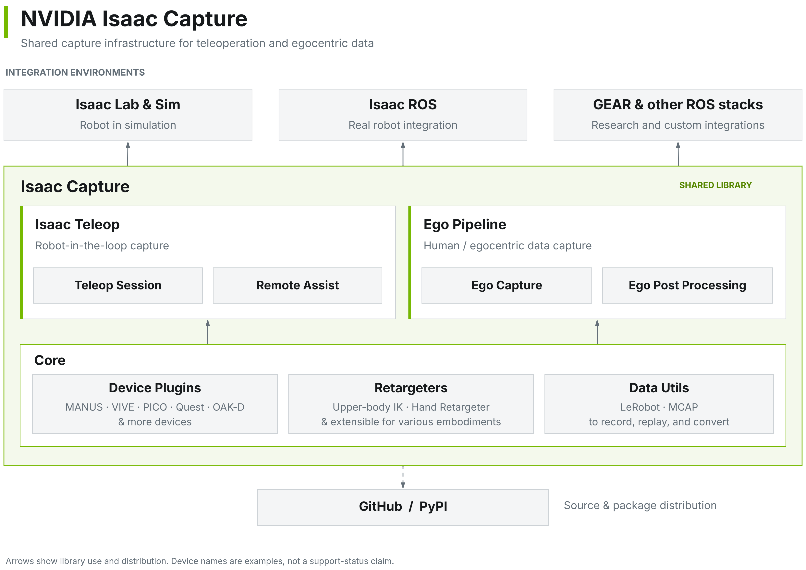

Architecture#
Isaac Capture provides shared capture infrastructure for teleoperation and egocentric data. It is a library used by applications and integration environments, including Isaac Lab and Sim, Isaac ROS, and other ROS stacks.

Isaac Capture components, shared infrastructure, and integration environments.#
Capture components#
Isaac Teleop provides robot-in-the-loop capture. Isaac Teleop introduces its workflows, including Teleop Session for connecting input devices, retargeting, and robot control. Remote Assist is also part of the teleoperation component; the Out-of-Band Teleop Control reference documents its control transport, rather than a complete operator workflow.
The Ego Pipeline covers human and egocentric data capture. Ego Capture and Ego Post-Processing are its two stages. They share the underlying device and data infrastructure with Isaac Teleop.
Integration and distribution#
Applications use Isaac Capture in simulation and on real robots. Integration guides are organized under Isaac Lab & Sim and Isaac ROS; the ecosystem also includes research and custom ROS integrations. Integration names in the diagram do not imply that every workflow or device is supported.
The source is distributed through GitHub, and Python packages through PyPI. See Build from Source for a source build.